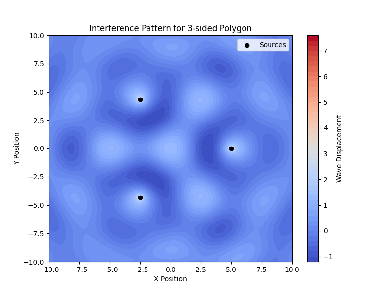
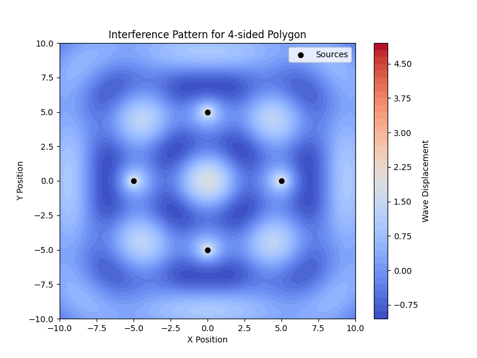
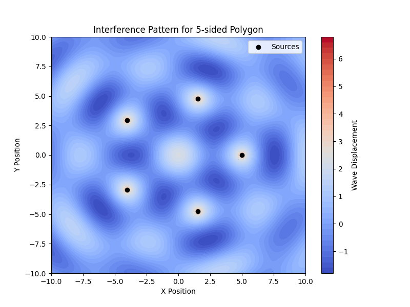
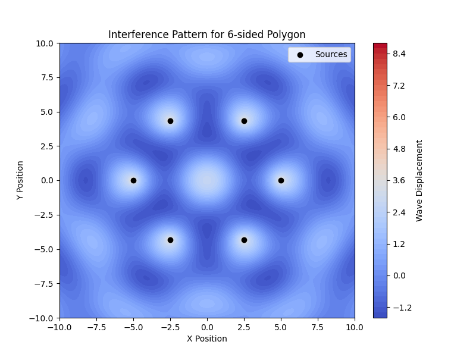

Problem 1
Interference Patterns on a Water Surface
Motivation
Interference occurs when waves from different sources overlap, forming new patterns. On a water surface, this phenomenon is observed when ripples from different sources meet, leading to constructive and destructive interference.
- Constructive interference happens when wave crests or troughs align, amplifying the displacement.
- Destructive interference occurs when a crest and a trough meet, canceling each other out.
Studying these interference patterns enhances our understanding of wave physics and has applications in acoustics, optics, and electromagnetism.
Theoretical Background
A point source on a water surface emits a circular wave described by the Single Disturbance equation:
where:
- \(\eta(x, y, t)\) is the displacement at point \((x, y)\) and time \(t\).
- \(A\) is the amplitude of the wave.
- \(k = \frac{2\pi}{\lambda}\) is the wave number, where \(\lambda\) is the wavelength.
- \(\omega = 2\pi f\) is the angular frequency, with \(f\) being the frequency.
- \(r = \sqrt{(x - x_0)^2 + (y - y_0)^2}\) is the distance from the source to the point \((x, y)\).
- \(\phi\) is the initial phase.
When multiple sources are placed at the vertices of a regular polygon, their waves superimpose, and the total displacement is:
where \(N\) is the number of sources.
Simulation Plan
We will: 1. Choose a regular polygon (triangle, square, or pentagon). 2. Place wave sources at its vertices. 3. Compute wave displacements from each source. 4. Sum them using superposition. 5. Visualize the resulting interference patterns.
Python Simulation
Below is a Python script that simulates the interference of circular waves from sources arranged in a chosen regular polygon. It uses NumPy and Matplotlib for calculations and visualization.
Install Required Libraries
import numpy as np
import matplotlib.pyplot as plt
Simulation Parameters
# Define wave parameters
A = 1 # Amplitude
lambda_ = 5 # Wavelength
k = 2 * np.pi / lambda_ # Wave number
f = 1 # Frequency
omega = 2 * np.pi * f # Angular frequency
phi = 0 # Initial phase
# Grid size
x_range = np.linspace(-10, 10, 300)
y_range = np.linspace(-10, 10, 300)
X, Y = np.meshgrid(x_range, y_range)
# Time variable (static snapshot)
t = 0
Defining the Polygon Sources
def polygon_vertices(n, radius=5):
"""Returns coordinates of n vertices of a regular polygon."""
angles = np.linspace(0, 2*np.pi, n, endpoint=False)
return np.array([(radius * np.cos(a), radius * np.sin(a)) for a in angles])
# Choose number of sources (triangle, square, pentagon)
N_sources = 4 # Change to 3 for triangle, 5 for pentagon, etc.
sources = polygon_vertices(N_sources)
Computing Wave Interference
def wave_from_source(x0, y0, X, Y, t):
"""Computes the wave displacement from a single point source."""
r = np.sqrt((X - x0)**2 + (Y - y0)**2) + 1e-6 # Avoid division by zero
return (A / np.sqrt(r)) * np.cos(k * r - omega * t + phi)
# Superposition of waves from all sources
total_wave = np.zeros_like(X)
for x0, y0 in sources:
total_wave += wave_from_source(x0, y0, X, Y, t)
Plotting the Interference Pattern
plt.figure(figsize=(8, 6))
plt.contourf(X, Y, total_wave, levels=50, cmap="coolwarm")
plt.colorbar(label="Wave Displacement")
plt.scatter(sources[:, 0], sources[:, 1], color='black', marker='o', label="Sources")
plt.xlabel("X Position")
plt.ylabel("Y Position")
plt.title(f"Interference Pattern for {N_sources}-sided Polygon")
plt.legend()
plt.show()
Analysis of Results




- Wave Amplification (Constructive Interference)
- Bright (red) regions represent wave crests reinforcing each other.
-
These occur where the path difference between sources is an integer multiple of the wavelength.
-
Wave Cancellation (Destructive Interference)
- Dark (blue) regions indicate troughs canceling out.
-
These form where the waves from different sources meet out of phase.
-
Pattern Characteristics
- The number of sources (N) affects symmetry.
- Increasing \(N\) creates more complex patterns with distinct nodal lines (regions of zero displacement).
- The wavelength (\(\lambda\)) controls the spacing of the interference bands.
Conclusion
This simulation visualizes how wave sources arranged in a regular polygon create interference patterns on a water surface. The results highlight key wave properties like constructive and destructive interference, demonstrating the superposition principle in action.
This study is useful in understanding wave behavior in physics and engineering applications, such as optical interference, antenna array design, and acoustics.